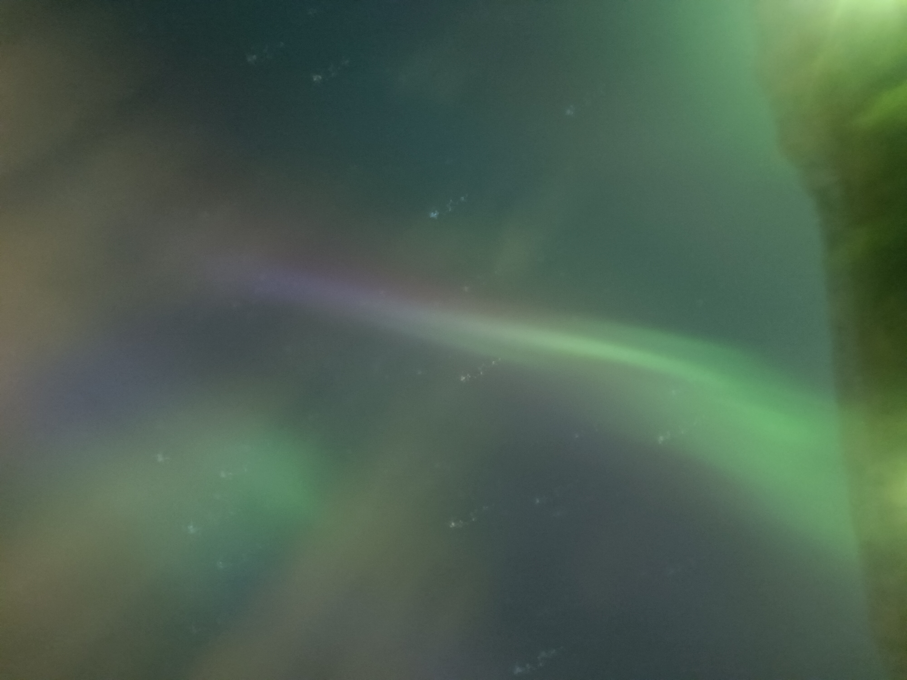
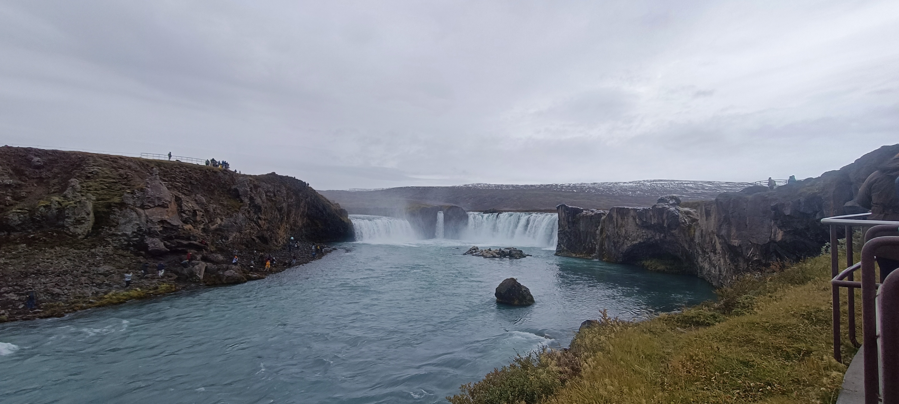
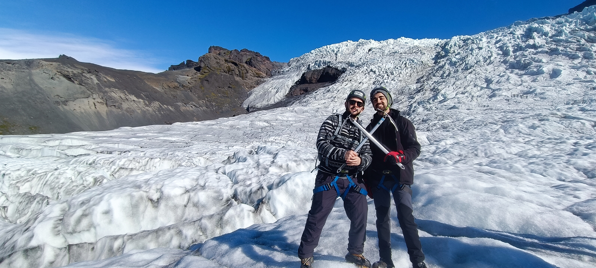
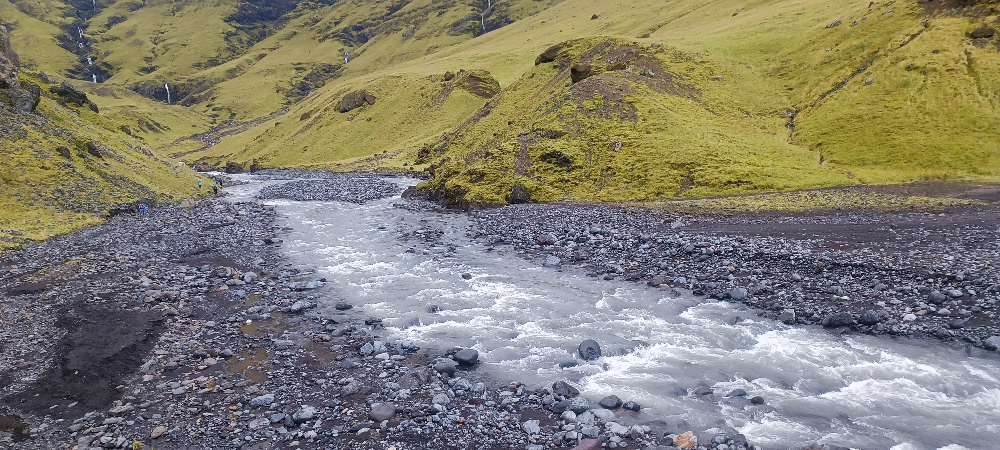
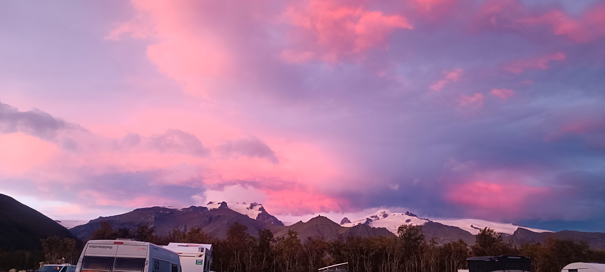
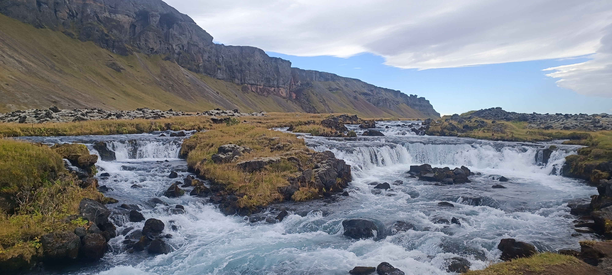

Iceland
The country of ice and fire! In the middle of the war, right after I finished my Bachleor's degree, My friend from the army and I went to Iceland. We were so excited and Iceland just topped every expectation we had about the place. We went to so many waterfalls, hiked mountains and volcanoes, hiked on an actual glacier, ziplined above an incredible valley, saw some seals and slept in a van for 2 weeks. I can't describe the beauty and the magnitude of the nature of this country. Even though it's quite expensive, I think everyone should go to Iceland at least once in their life. I will return there some day, I promise!
Picturesque Moments






Favourite Places:
-
Reykjavik
Reykjavik is the capital of Iceland and arguably, the only city in the whole island! It is so pretty, has a wonderful lake and great museums! One of the best museums is The Phallos Museum which displays exactly what you think it display. It has the famous rainbow street which leads to the greatest church I've ever seen- Hallgrimskirkja which is built from volcanic rocks!
-
waterfalls
There are so many waterfalls in Iceland but I swear, each is unique and beautiful on its own. Some of the best, in my opinion are: Godafoss in the north, Gullfoss in the golden circle, Skogafoss in the south, and Svartifoss by Skaftafell glacier.
-
The Golden Ring
If you don't have much time in iceland and you want to experience everything Iceland has to offer in a single day, go to the golden ring. It's not far from Reykjavik and has a great reserve called Þingvellir, a beautiful crater (Kerid) , great waterfalls like Gullfoss and even have the original Geysir! It's a great trip, although very touristy.
-
Black Beaches
Did you ever thought a volcano ash can make a good beach? Well, think again. Rejnisfjara beach near vik is the most unique beach Iv'e ever seen! Black sand, Hexagonal cliffs, volcanic caves, waves that can sweep you off your feet (be careful!) and you maight even see Puffins in the summer!
-
Geothermic Bath
Iceland is very volcanic and so there are are many geothermic lakes and rivers you can bathe in! There are the commercial ones that offer spa experience (we went to the Myvatn Nature Baths) but there are also free ones along the way like Seljavallalaug in the south.
-
Seal watching
Seals are so cute you have to go and watch them in the Snaefellsnes peninsula in Ytri Tunga reserve and in Illugstadir in the north part of the island.
-
The Northern Lights
The northern lights are a natural phenomena happening around the northern magnetic pole of earth. It represent itself with beautiful colors upon the night sky and it's so pretty you might cry, I swear. It doesn't happen every night so check with the Aurora App for a chance to see it. You'll need a relatively dark place, far from city lights and a good camera (also, a blanket because it's freezing at night).
Travel Tips:
- Van Camping: Iceland is a circular island and there are camping ground everywhere! With a van you can explore every nook and crannie around the island and enjoy this beautiful country. Check out all of the rental companies and compare prices!
- Warm ClothesThere is a good reason Iceland has "ice" in its name. It is cold over there and it always snows somewhere. Bring warm and thermal clothes even though your'e going to sweat hiking these mountains!
- Local Currency: Icelandic Krounur (ISK) is relatively low to the ILS but iceland is very expensive. However, they rarely use cash so use your bank to convert some money in your account to ISK and use a credit card.
- Respect Nature: The nature in Iceland is magnificent and fragile so be careful and mind your step! There are parts of the island covered in moss and it should'nt be disturbed and stepped on.
- Icelandic Cuisine: The icelandic food is unique and only for the brave ones! They have fermented sharks which has a foul smell but they also have the greatest hotdogs in the world which are also high quality even in a gas station cafeteria.
- Supermarkets: Restaurants are so expensive in Iceland and especially in Reykjavik so buy your groceries in supermarkets along the way. Bonus and Kronan are great supermarkets and they have branches all over the island.